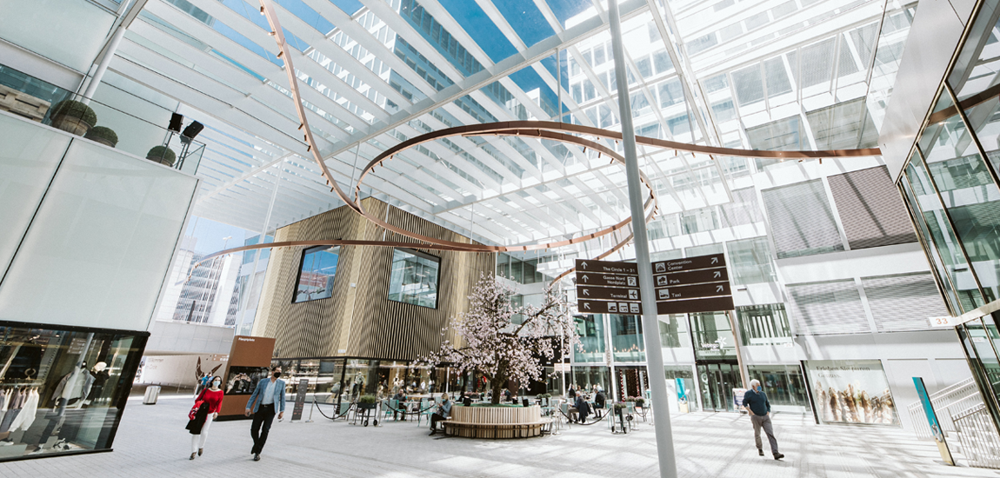

고품격 여객 서비스로, 세계 공항서비스의 새로운 기준을 제시하였습니다.
 품격 높은 면세 쇼핑과 여객 니즈에 부합하는
맞춤형 환승 서비스,
공항 안팎에서 펼쳐지는 다채로운 문화 공연과 다양한 F&B 서비스 등
인천국제공항은 여객들에게 비교할 수 없는 만족을 선사하며
세계 공항 서비스의 새로운 패러다임을 열어가고 있습니다.
남다른 품격의
수준 높은 면세 쇼핑
입맛대로 즐기는
최고 공항의 맛과 멋
365일 펼쳐지는
다채로운 문화 공연
환승이 곧 여행이 되는
특별한 서비스